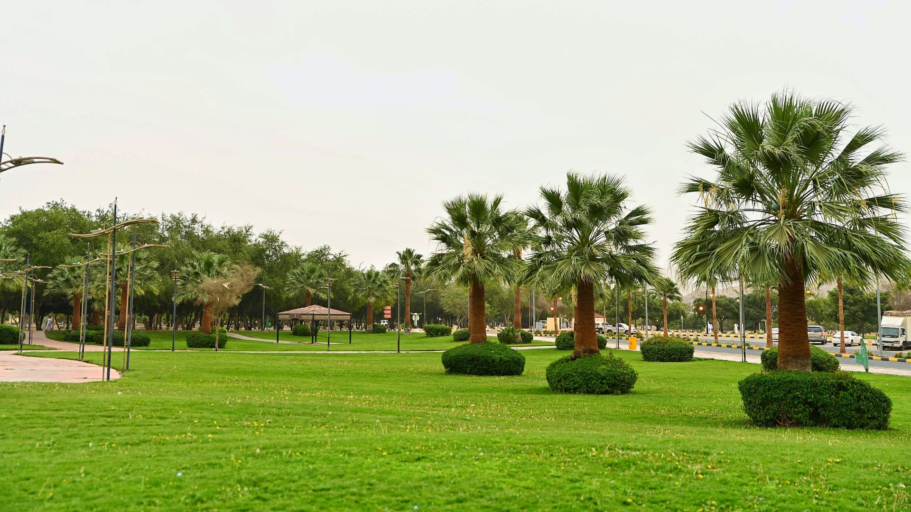
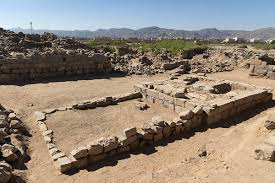

Nature Trails
Najran offers a variety of peaceful landscapes and nature trails ideal for walking and relaxation. While many of our featured trails are based in Najran, you can also discover beautiful walking spots across Saudi Arabia for a unique and serene experience.
King Fahad Park
A large green space with walking paths, trees, and a calm atmosphere perfect for evening walks.
Al-Ukhdood Archaeological
An ancient site with historic ruins and inscriptions. Offers a peaceful and educational walk through history and nature combined.
Aba Al Rashash Park

This park has a walking track, benches, and gardens. A great place for quiet morning walks in Najran.
Trail Comparison
| Trail Name | Location | Length (km) | Difficulty |
|---|---|---|---|
| King Fahad Park | Najran | 3.2 | Easy |
| Al-Ukhdood Archaeological Site | Najran | 4.5 | Moderate |
| Aba Al Rashash Park | Najran | 2.8 | Easy |
Best Times to Go Walking
- Early Morning
- Just Before Sunset
- During Spring or Fall
Benefits of Nature Walks
- Reduces stress and anxiety
- Improves heart health
- Increases creativity and focus
- Helps you sleep better